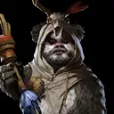

Ewok Elder
Ewok Healer that specializes in Revives
Ewok Healer that specializes in Revives
Deal Physical damage to target enemy with a 60% chance to gain 50% Turn Meter, grant other Ewok allies half that amount, and grant other allies 10% Turn Meter.
Dispel all debuffs on all allies. All allies recover Health equal to 30% of Ewok Elder's Max Health with a 35% chance to revive defeated allies at 15% Health.
Revive a random defeated ally at 40% Health with a 55% chance for Ewok Elder to gain 45% Turn Meter. If the revived ally is an Ewok, they are called to Assist. Whenever an Ewok ally is defeated, reduce the cooldown of this ability by 1.